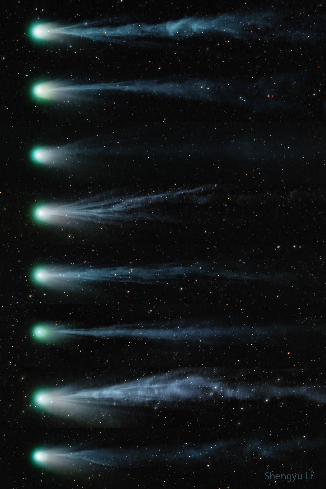

Trouvez votre étoile
en un clic
SkyScope, la platforme de recherche d’étoiles et de sattélites en ligne
Tennez vous au courrant des dernières découvertes.
Satellite Tracker
recherchez parmis des milliers de satélites, les photos, vidéos
et informations que vfous
houaitez
Phénomènes
recherchez parmis des milliers de satélites, les photos, vidéos
et informations que vfous
houaitez
Photo du jour
À travers les yeux de la
NASA
Rejoignez la NASA alors qu'une éclipse solaire totale se déplacera à travers
l'Amérique du Nord le lundi 8 avril, traversant le Mexique, les États-Unis,
du Texas au Maine, et traversant la côte atlantique du Canada. Connectez
-vous à l'émission officielle de la NASA à 13 heures. EDT (1700 UTC) pour des
vues en direct depuis le chemin de l'éclipse, des
commentaires d'experts et des démonstrations en direct.